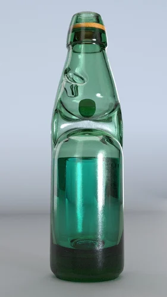

Goli Soda: A fizzy burst of nostalgia
A simple joys in every bubbly sip
Goli Soda, also known as Banta or Goti Soda, is a popular carbonated soft drink in India. It is characterized by its distinctive glass bottle sealed with a marble, which acts as a stopper. The drink is available in various flavors and is especially cherished for its nostalgic value and refreshing taste.
Learn More
